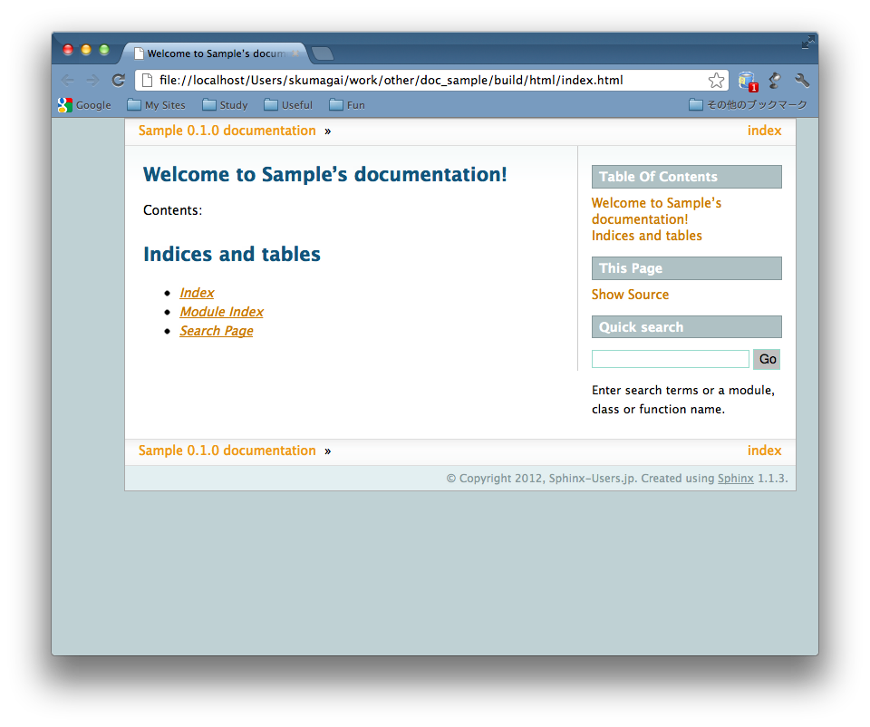
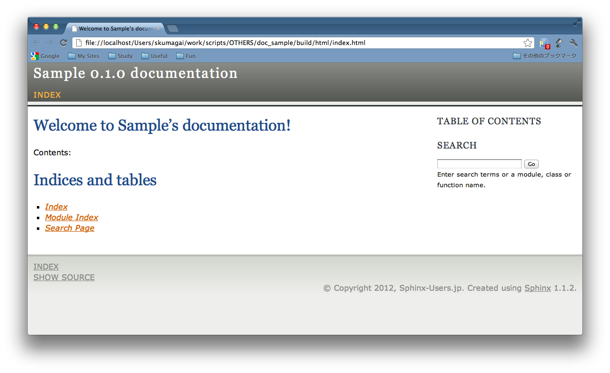
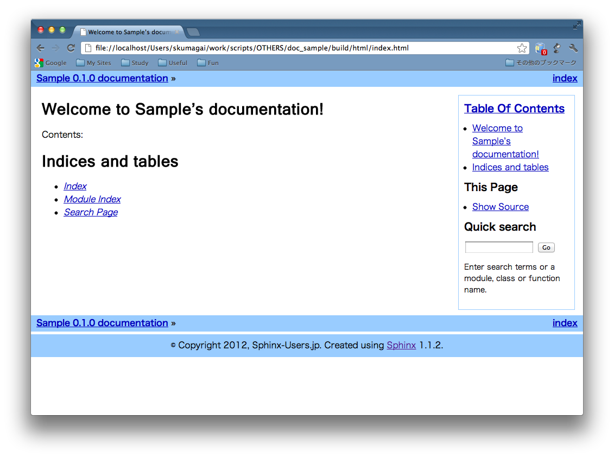
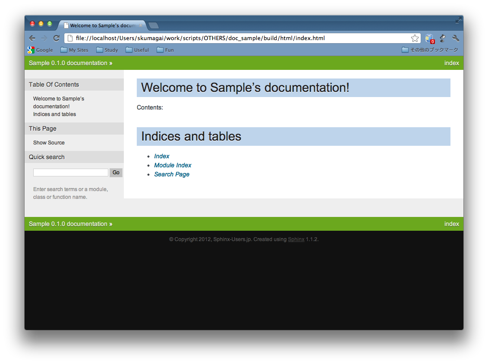
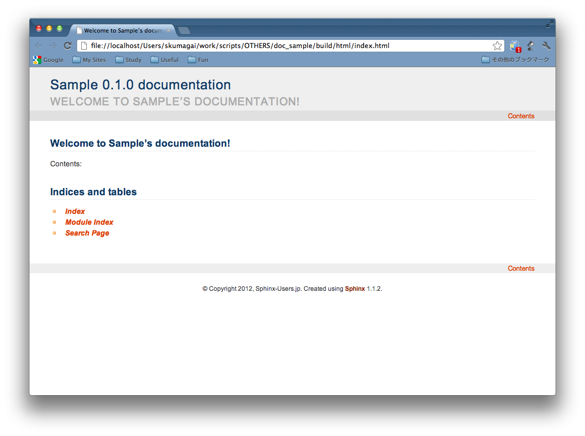
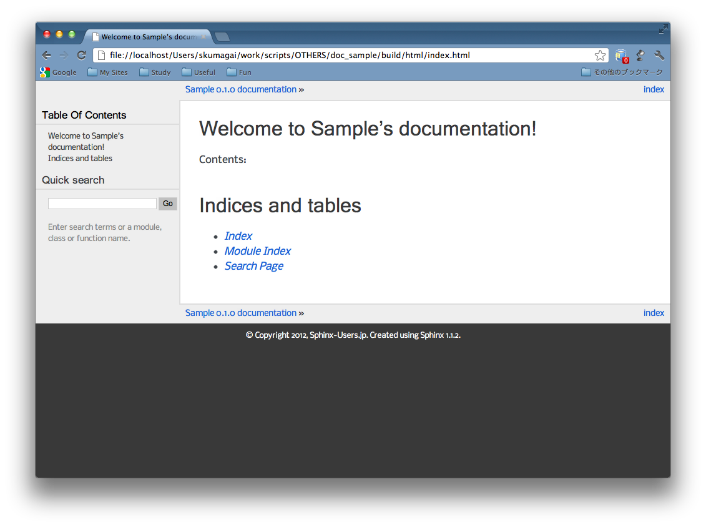

Beginners¶
What’s the HTML Theme?
テーマ【theme】
- 創作や議論の根本的意図・題目・中心課題など。主題。
- 〘言〙〔theme〕機能主義言語学の文法理論の用語。(以下略)
— 三省堂 大辞林 第三版 より引用
A theme is a package to change appearance of
its HTML output in accordance with a certain subject.
It means, a theme is...
a collection of HTML templates, stylesheet(s), and other static files.
How should I use a theme?
conf.py contains a section like this.
# -- Options for HTML output -------------------
# The theme to use for HTML and HTML Help pages.
# See the documentation for a list of builtin themes.
html_theme = 'default'
Modify it like as below, then...
html_theme = "sphinxdoc"
Let’s make it ;-)
$ make html
html_theme = 'default'
So, an appearance will be change...

html_theme = 'sphinxdoc'
like this.

It seems so easy!
Other themes.
“agogo”
“traditional”
“nature”
“haiku”
“pyramid”
Try building a document with each built-in themes, and you’ll find good and bad stuff of them.
Next, Intermediate